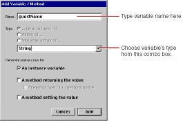

In this section, you'll declare individual variables in your code file (Main.java) to hold the name, e-mail address, and comments entered by a single guest. Later on, you'll structure this information differently in order to work with data from multiple users.
WebObjects Builder allows you to declare variables without having to edit your source file directly. At the bottom of the panel there is a pull-down menu titled Edit Source. It has five items:
Add Key allows you to add a key to your source file. A key can be either an instance variable or a method that returns a value.
Add Action allows you to add the template for an action method, which is a method that takes no parameters and returns a component (the next page to be displayed).
Delete Key allows you to delete a key from your source file by deleting the instance variable or the method that returns a value.
Rename Key allows you to rename a key in your source file by renaming the instance variable or the method that returns a value.
View Source File opens the source file in a Project Builder window.
Choose Add Key from the pull-down menu.
The Add Variable/Method panel opens.

Type guestName in the Name field.
To specify the variable's type, select String from the combo box (or you can type String directly in the box).
Click Add.
You have just created a variable called guestName of type String. It appears in the first column of the object browser. A declaration for guestName also appears in Main.java, which you'll edit later.
Create the variables email and comments in the same way (they are also of type String.)